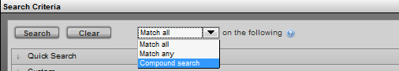
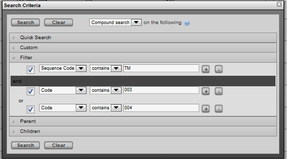
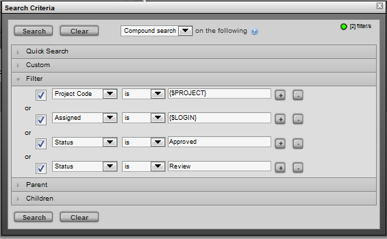
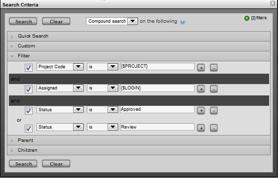

For some searches, the search filters need to grouped and evaluated in a specific order, in order to achieve the desired expression. Although not always necessary, this type of "compound" search is useful when complex filtering is required. Generally, compound searches involve the ability to evaluate a search expression similar to the following example:
[A or B] and [C or D or E]
Here is an example of a compound search on tasks:
[project, is, "{$PROJECT}"] and [assigned is, "{$LOGIN}"] and [status, is "Approved"] or [status, is "Review"]
This search can be phrased as: "Find all tasks from the current project, assigned to the current user with a status of Approved or Review".
$PROJECT and $LOGIN are used as variables in the search that are dynamic based on the environment.
To do this type of search in TACTIC, in the Search Box, set the "Match" option to Compound Search:

In this search mode, the choice of filters are all "and" or all "or". Groups of searches can be created by SHIFT-clicking on a particular "and" or "or" between the search filters.

To create the example above:
Load a view of tasks and set the search match setting to "Compound Search"
Add the following Filters
project_code, is, "{$PROJECT}"
assigned, is, "{$LOGIN}"
status, is, "Approved"
status, is, "Review"

Now click the and/or to toggle all to "and"
next SHIFT-Click on the "and" after the first and second filters.

In the new group, click the and/or to toggle to "or"
Run the search.